Machine Learning in Materials Processing & Characterization
Unit 4: From Classical Metrics to Learned Representations
Prof. Dr. Philipp Pelz
FAU Erlangen-Nürnberg


§0 · Frame
01. Today’s Question
What can a CNN already do for us?
- Sixteen real, published applications across characterization and processing.
- Same convolutional toolkit, deployed everywhere from SEM to LPBF cameras.
What this unit is not.
- Not a re-derivation of perceptron / MLP / activations — that is MFML Unit 4.
- This deck assumes the forward pass and training loop are familiar.
02. Where We Are
Recap — Unit 3
- Cleaning, scaling, leakage-safe validation Sandfeld, Stefan et al., (2024).
- Every preprocessing choice was a modelling decision.
Today — Unit 4
- Turn microstructure into model-ready tensors.
- Tour ten characterization + six processing case studies.
- Diagnose pitfalls before next week’s CNN deep-dive.
03. Learning Outcomes
By the end of 90 minutes, you can:
- Quantify information loss when a micrograph collapses to one stereological scalar.
- Choose between tabular, \(S_2\), eigen-mode, image, and 1-D spectral encodings.
- Recognise published CNN applications across SEM, EBSD, TEM, XRD, X-ray CT, AM cameras, and welding sensors.
- Name failure modes that erase apparent CNN gains (specimen splits, lab shift, imbalance, segmentation noise, raw-pixel MLPs).
- Articulate why Unit 5 is about CNNs — locality + weight sharing as the right inductive bias.
§1 · Why Classical Metrics Aren’t Enough
04. Stereology in One Slide
Standards-grade descriptors
- \(V_V\) — volume fraction per phase.
- \(S_V\) — interface area per unit volume.
- Mean intercept / ASTM grain-size \(G\).
Standards-grade ≠ lossless
- Each is a scalar condensation of a 3-D field.
- Reproducible, auditable, lossy by construction Sandfeld, Stefan et al., (2024).
05. Hand-Crafted Descriptor Families
Three families
- Shape: aspect ratio, circularity, tortuosity.
- Distribution: nearest-neighbour spacing, clustering indices.
- Texture: ODF coefficients, pole figures.
Each family answers questions you knew to ask.
- Strength: physical names, peer-reviewable, auditable.
- Weakness: you only recover structure you designed the scalar to see — unknown mechanisms stay invisible.
06. The Information Bottleneck
- Micrograph: \(\mathcal{O}(10^6)\) pixels of state.
- ASTM-style scalar: one number per channel of interest.
- Compression ratio: \(\sim 10^6\) : \(1\).
Question: can we keep more information without drowning in \(10^6\)-dim raw pixels?
Answer: structured vectors — \(S_2\), descriptor stacks, learned embeddings — sized to data and task.
07. Where ASTM Hits a Wall
Systems where one scalar per mechanism breaks
- High-entropy alloys — multi-phase, partitioning, sluggish diffusion.
- Additively manufactured parts — spatially varying solidification, not a stationary field.
- Hierarchical composites — nm–µm length scales coexisting in one image.
Consequence
- Scalar summaries assume stationarity and known relevant descriptors.
- Modern materials violate both routinely.
Up next: what changes when the descriptor is learned, not chosen.
08. Hero Result — Steel Phase Classification

Azimi et al., Sci. Rep. 2018 Azimi, Seyed Majid et al., (2018), doi:10.1038/s41598-018-20037-5
- Dual-phase steel constituents on SEM micrographs (martensite, bainite, pearlite, …).
- Fully Convolutional Net + superpixel max-voting.
- Prior SOTA: 48.9% → FCNN: 93.94%.
- Same images. No new physics — representation change alone.
Note
The 45-point jump is the headline of this whole unit.
09. Where Hand-Crafted Hits a Wall — A Wider View
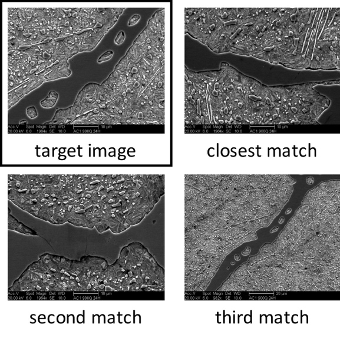
Holm et al., MMTA 2020 — review Holm, Elizabeth A. et al., (2020), doi:10.1007/s11661-020-06008-4
- Surveys CV/ML across classification, semantic segmentation, object detection, instance segmentation.
- Pattern: where labels exist, learned representations match or beat hand-crafted features.
- The bottleneck has moved: from “which descriptor?” to “which labels and which split?”
10. The Paradigm Shift
| Classical | Modern (learned) | |
|---|---|---|
| Input | Image \(\to\) metrics | Image / signal \(\to\) representation |
| Features | Hand-crafted, named | Learned (or correlation-based) |
| Bottleneck | Information loss | Data + compute + validation discipline |
Ethics carry over
- Specimen splits, leakage, calibration — all unchanged.
- Scientist still owns labels, splits, metrics, physics checks Neuer, Michael et al., (2024).
§2 · Encoding Microstructure for ML
11. The Encoding Question
Before training: map microstructure to tensor \(\mathbf{X}\).
Principle: encoding upper-bounds what physics the hypothesis class can express Neuer, Michael et al., (2024).
Garbage encoding \(\Rightarrow\) garbage in, regardless of architecture.
| Encoding | Shape | What the model sees |
|---|---|---|
| Hand-crafted | \(\mathbb{R}^D\), small | Pre-distilled features |
| \(S_2\) / patches | \(\mathbb{R}^{D'}\) | Correlations / local stats |
| Eigen-modes | \(\mathbb{R}^{K}\) | Linear modes of structure |
| Image + conv | \(\mathbb{R}^{H \times W \times C}\) | Spatial features (Unit 5) |
12. Tabular: Composition + Process
- Often no image in \(\mathbf{X}\):
- Composition fractions in \(\mathbb{R}^{d_{\text{el}}}\).
- Process: temperature, time, cooling rate, atmosphere.
- History: ordered steps (embedded or binned).
MLP turf
- \(D \sim 10\)–\(50\), well-defined units.
- Standardise per train fold; freeze \((\mu, \sigma)\) at inference Neuer, Michael et al., (2024).
- Watch: mass fractions sum to 1 → drop one column or use compositional geometry.
13. Two-Point Statistics \(S_2\)
\[S_2(\mathbf{r}) = P\!\bigl(\text{phase}(\mathbf{x})=\alpha \,\wedge\, \text{phase}(\mathbf{x}+\mathbf{r})=\alpha\bigr)\]
- Translation-averaged correlation.
- Captures length scales, anisotropy, clustering — far more than one scalar, far less than full pixels Sandfeld, Stefan et al., (2024).
Why MLP-friendly
- Fixed-length vector after binning \(\mathbf{r}\) on a grid in the unit cell / ROI.
- Pairs naturally with standardised inputs (Unit 3).
- \(D \sim 10^2\)–\(10^3\) — tractable on materials sample counts.
14. MKS Pipeline (Materials Knowledge Systems)
Typical chain
- Segment / phase-label microstructure.
- Compute \(S_2\) on a fixed grid of \(\mathbf{r}\).
- Standardise correlation components using train statistics only (Unit 3).
- Train MLP (or linear map) \(g_\theta(S_2) \approx\) property Sandfeld, Stefan et al., (2024).
Why it works
- Bakes in translation invariance before the net sees data.
- Keeps \(D\) in the hundreds — matches typical materials sample counts.
- Strong baseline before escalating to CNNs on raw pixels.
15. Eigen-Microstructures
Idea. Stack registered microstructure fields (phase indicator, orientation channels) into a design matrix; PCA on standardised columns yields dominant modes of structural variation — “eigen-microstructures.”
Why standardise first?
- Without it, PC1 often tracks brightness, thickness, detector gain — not microstructure.
- With per-feature z-scores fit on train only, PCs more often reflect shape variation Sandfeld, Stefan et al., (2024).
Connect: Unit 5 CNNs learn spatial features end-to-end; eigen-modes are the linear baseline to beat.
16. Image as Tensor
- 2-D micrograph: \(\mathbf{X} \in \mathbb{R}^{H \times W \times C}\).
- 3-D tomography: \(\mathbf{X} \in \mathbb{R}^{D \times H \times W \times C}\).
- \(C\) = channels: BSE/SE, EBSD orientation Euler angles, EDS element maps.
MLP on flattened pixels?
- \(1024 \times 1024\) flattened → first dense layer ≈ \(10^9\) weights.
- With \(N \sim 100\) specimens: spurious correlations win.
- Solution: convolutional inductive bias (Unit 5).
17. Spectra as 1-D Signals
- XRD pattern, EELS edge, Raman spectrum: \(\mathbf{x} \in \mathbb{R}^{N_{\text{channels}}}\).
- Locality matters along the channel index — neighbouring bins describe the same peak.
- The convolutional inductive bias applies in 1-D too.
1-D CNN is the natural architecture
- Same shared weights, same locality argument as 2-D images.
- Preview: Park 2017 (slide 28) — phase ID with a 1-D CNN.
Note
“CNN” is not a synonym for “image network.”
18. Encoding Decision Rule
| Input type | Typical \(D\) | First-line model |
|---|---|---|
| Composition + process | 10–50 | MLP |
| Morphology scalars | 5–50 | MLP |
| \(S_2\) / MKS | \(10^2\)–\(10^3\) | MLP / shallow 1-D conv |
| 1-D spectrum | \(10^3\)–\(10^4\) | 1-D CNN |
| 2-D micrograph | \(10^4\)–\(10^7\) | CNN (Unit 5) |
| 3-D volume | \(10^6\)–\(10^9\) | 3-D CNN / U-Net |
Decision rule
- Start with the smallest \(\mathbf{X}\) that passes physics + grouped CV.
- Add representation capacity when grouped CV shows a persistent gap, not when train loss wants it McClarren, Ryan G., (2021).
§3 · Application Gallery — Characterization
19. Gallery Overview — Characterization
Six task families
- Classification (slide 20–21).
- Segmentation (22–23).
- Defect / feature detection (24–25).
- Property regression from images (26–27).
- Spectroscopy (28).
- 3-D tomography (29).
Common pattern
raw signal → CNN → label / propertyNo hand-crafted descriptors. Same architecture family across SEM, EBSD, TEM, XRD, X-ray CT.
20. Case 1 — Steel Phase Classification (Azimi 2018)
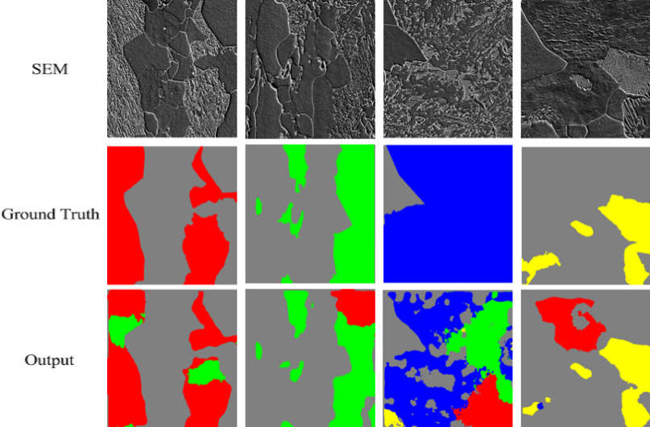
- Task. Classify constituents in dual-phase steel SEM micrographs.
- Method. Fully Convolutional Net + max-voting on superpixels.
- Data. Thousands of SEM tiles, expert-labelled.
- Result. 93.94% vs prior SOTA 48.9%.
- Lesson. Representation change alone unlocks the 45-pt jump.
21. Case 2 — UHCS Microstructure Manifold (DeCost & Holm)
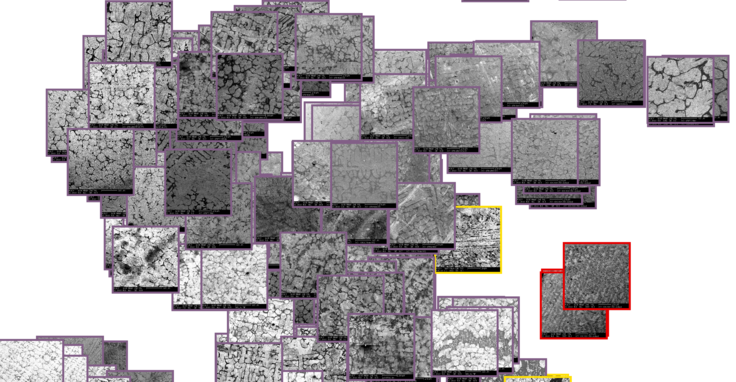
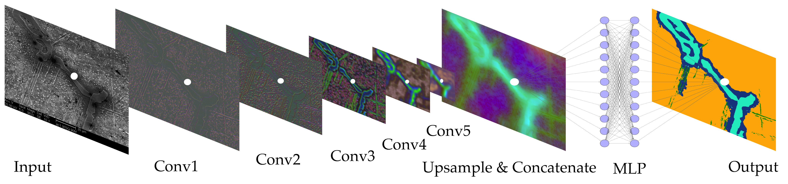
- Dataset. 961 public UHCS micrographs (
materialsdata.nist.gov). - Lesson. Pretrained CNN features cluster phase classes without labels — a transfer-learning preview (Unit 6) and the basis for Exercise 1.
22. Case 3 — U-Net for EBSD Phase Segmentation
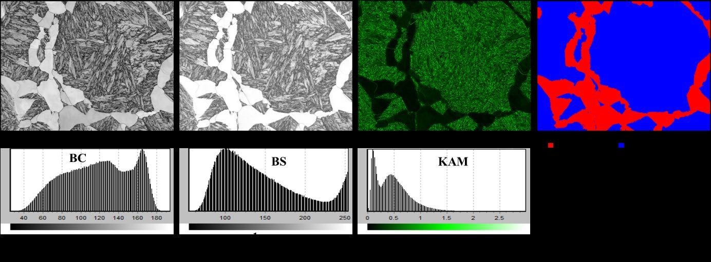
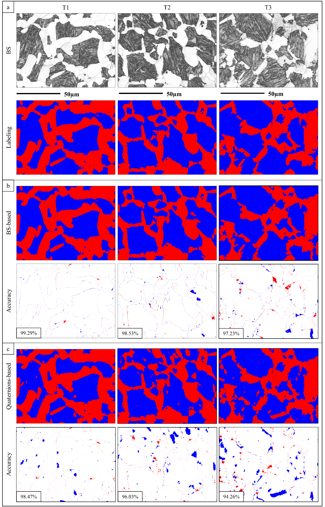
- Task. Pixel-level martensite / ferrite-bainite segmentation across three tempering conditions.
- Lesson. A standard U-Net on a single grayscale BS channel can reach the EBSD-quaternion baseline if augmentation is honest.
23. Case 4 — Complex Microstructure Inference (Durmaz et al. 2021)
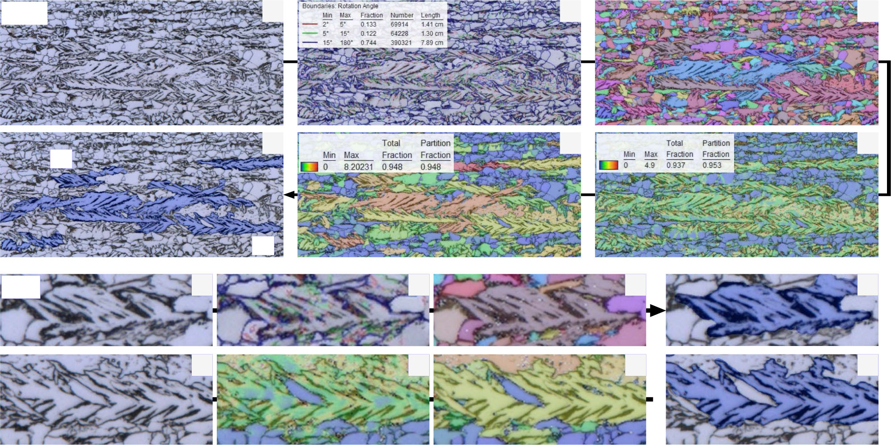
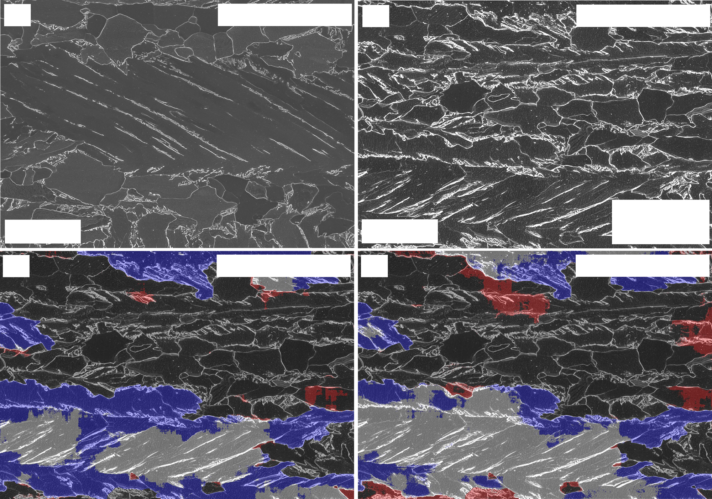
- Method. U-Net (semantic) + Mask R-CNN (instance) trained on EBSD-derived ground truth, deployed on LOM/SEM only at inference.
- Lesson. EBSD-grade labels at training time → optical-microscopy throughput at inference time.
24. Case 5 — TEM Dislocation Segmentation (Govind et al. 2024)
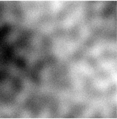
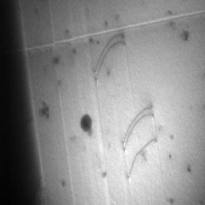
- Task. Instance segmentation of dislocations in TEM.
- Method. YOLO-style + U-Net trained on simulated dislocation images, evaluated on real experiments.
- Lesson. Simulation-augmented training bypasses the “never enough labels” bottleneck — standard wherever physics simulators are mature.
25. Case 6 — STEM Defects in Irradiated Steels (Roberts 2019)
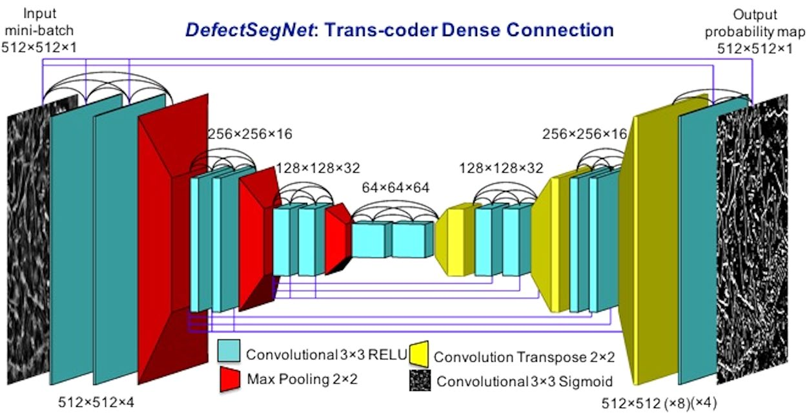
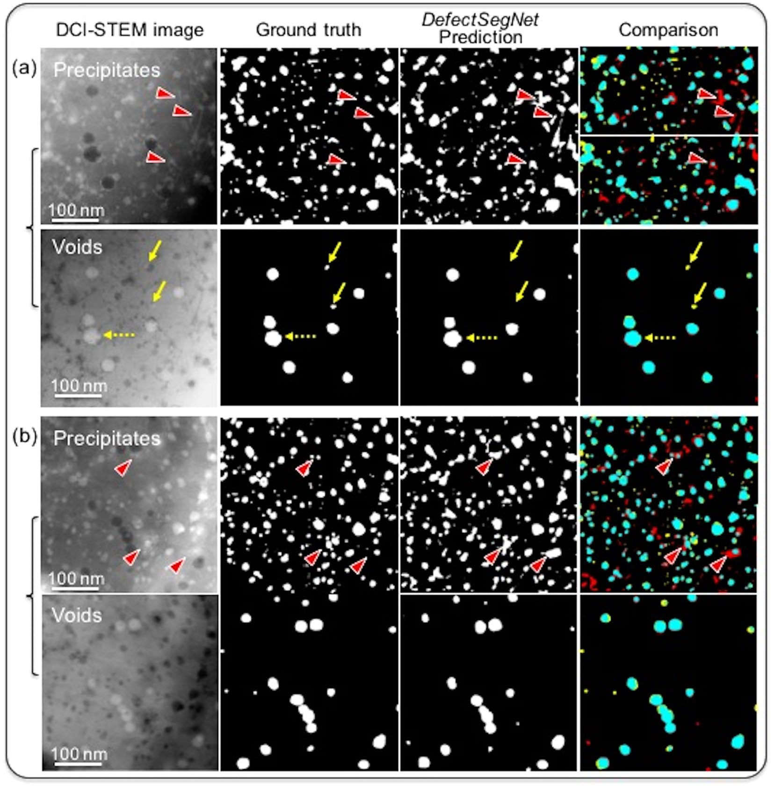
- Task. Semantic segmentation of voids, dislocation loops, precipitates in irradiated steels.
- Result. ~85% IoU — matches inter-annotator variability.
- Lesson. Once you hit the annotator floor, more model capacity buys nothing.
26. Case 7 — 3-D-CNN Composite Stiffness from RVEs
- Task. Predict effective stiffness tensor of two-phase composites from voxelated RVEs Yang, Zijiang et al., (2018), doi:10.1016/j.commatsci.2018.05.014.
- Method. 3-D CNN trained on FE-homogenised stiffness labels.
- Result. >40% accuracy improvement over hand-engineered descriptors at a fraction of the FE cost.
- Lesson. CNNs can act as homogenisation surrogates inside design loops where each FE call is too expensive.
27. Case 8 — Yield-Surface Prediction from Microstructure
- Task. Predict the full yield surface (not a single scalar) from a microstructure image Heidenreich, Julian N. et al., (2023), doi:10.1016/j.ijplas.2022.103506.
- Method. CNN regression with a multi-output head producing yield-surface coefficients.
- Lesson. A learned representation lets one model output functional properties — anisotropic yield, stress-strain curves, dispersion relations.
- Significance. Moves CNNs from “label predictors” to “constitutive surrogates.”
28. Case 9 — Lee/Park et al. 2020 — XRD Phase ID with 1-D CNN
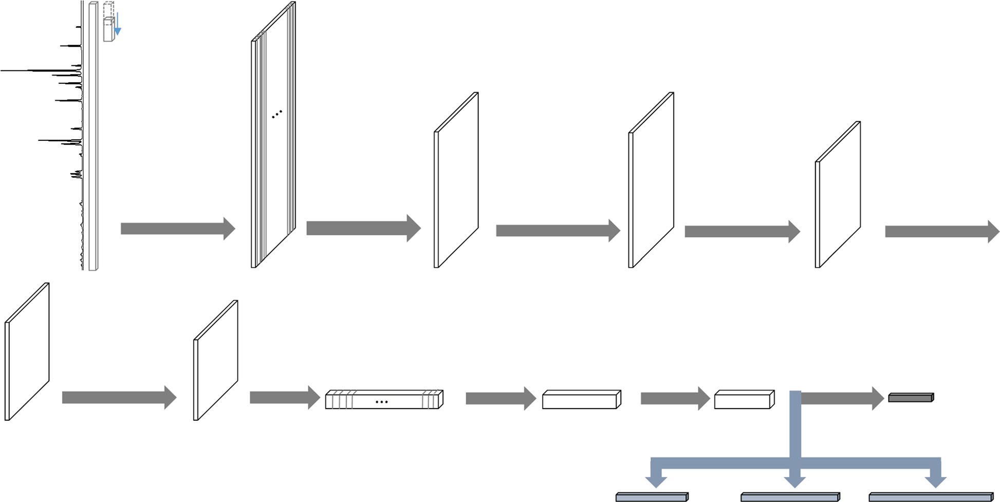
- Task. Phase ID in multi-phase inorganic mixtures from XRD.
- Train on simulation, test on real. ~\(10^5\) patterns from ICSD with augmentation for strain, texture, peak broadening.
- Result. ~100% phase ID; ~86% three-phase quantification on real experiments.
- Lesson. CNN \(\neq\) image network — convolution applies wherever there is locality (peak shape along \(2\theta\)).
29. Case 10 — 3-D U-Net for Li-ion Electrode Tomography
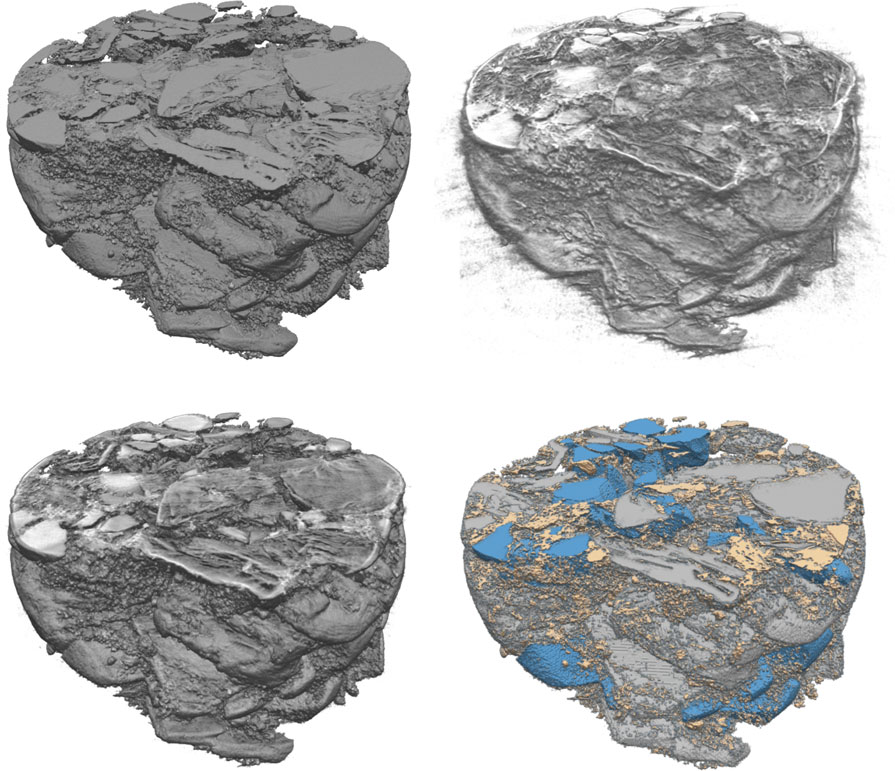
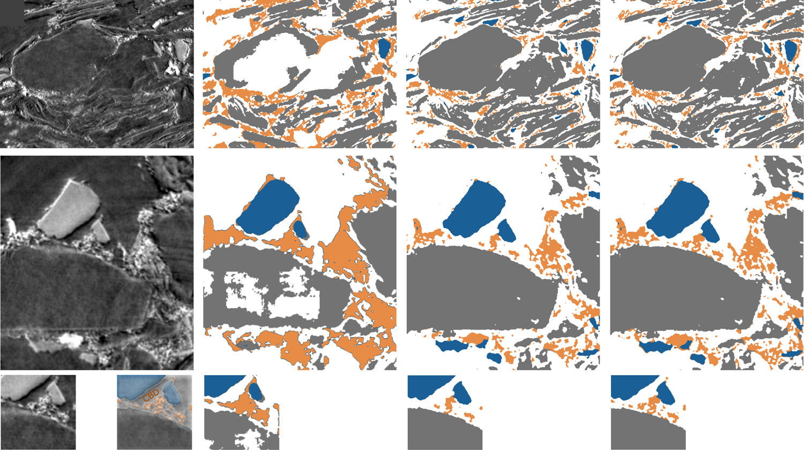
- Method. 3-D U-Net trained partly on synthetic electrodes with known voxel-level ground truth.
- Lesson. Carbon-binder vs pore has near-zero contrast — thresholding fails; simulation-augmented CNN succeeds.
30. Characterization Gallery Recap
Same recipe across ten cases
- raw signal \(\to\) CNN \(\to\) label / property.
- Tasks: classification, segmentation, regression, retrieval.
- Domains: SEM, EBSD, TEM, STEM, XRD, X-ray CT.
What changed across cases
- The encoding (\(\mathbf{X}\)).
- The labels (\(y\)).
- The head of the network.
What did not change
- The convolutional inductive bias.
- The discipline (specimen splits, calibration, shift testing).
§4 · Application Gallery — Processing
31. Gallery Overview — Processing
Six cases spanning:
- In-situ AM monitoring (32–33).
- Real-time welding inspection (34–35).
- CNNs as physics surrogates (36).
- End-to-end PSP closure (37).
Pattern
process sensor → CNN → quality
decisionThe time scale changes: characterization is offline, processing is online — sometimes at video rate.
32. Case 11 — LPBF Powder-Bed Quality (Xception Transfer Learning)
- Task. Classify powder-bed defects (balling, incomplete spreading, groove, ridge, spatters, protruding part, scattered powder, homogeneous) from line-sensor recoater images during LPBF Fischer, Felix Gabriel et al., (2022), doi:10.1016/j.matdes.2022.111029.
- Method. Xception pretrained on ImageNet, fine-tuned on a Fraunhofer-ILT dataset acquired under coaxial / dark-field / diffuse lighting.
- Result. 99.15% classification accuracy across seven classes (dark-field condition); per-class F1 between 97.85% and 99.71%.
- Lesson. ImageNet pretraining transfers astonishingly well even to grayscale recoater frames — a clean transfer-learning teaser for Unit 6.
33. Case 12 — Thermographic Porosity Prediction in LPBF
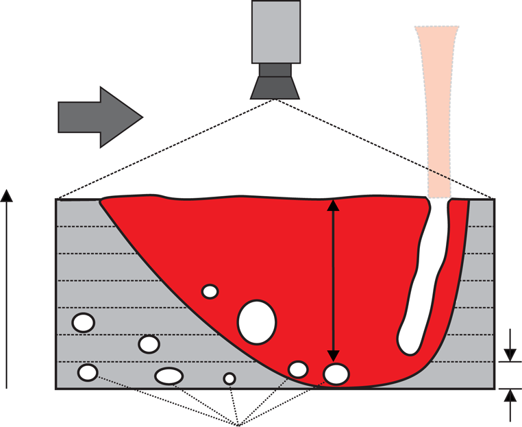
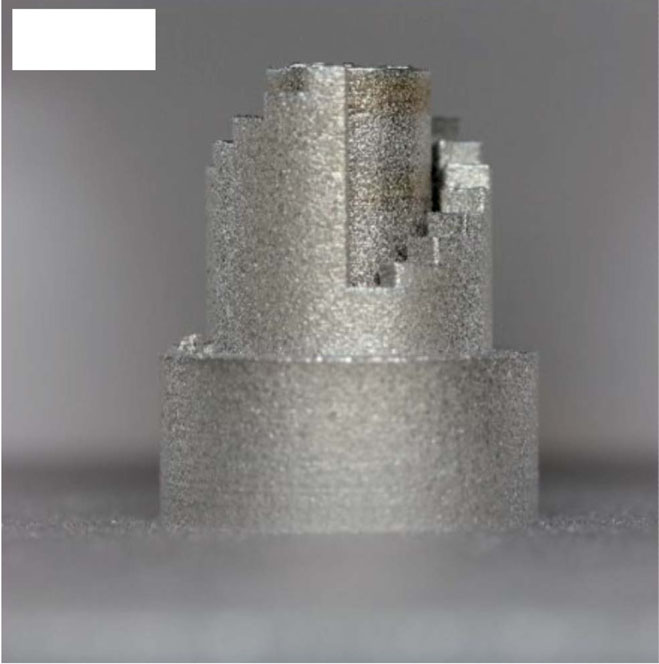
- Method. Multi-layer thermographic feature stack → supervised CNN classifier; CT ground truth.
- Result. Accuracy ~0.96, F1 ~0.86 for keyhole porosity in small sub-volumes.
- Lesson. Thermal history is a proxy for porosity — CNNs decode it densely, below the resolution of point pyrometers.
34. Case 13 — Real-Time FSW U-Net at ~25 fps
- Task. Surface defect segmentation + weld-width geometry in friction-stir welding Loganathan, Naveen et al., (2026), doi:10.1016/j.jmsy.2026.01.007.
- Method. U-Net optimised for on-device inference at video rate.
- Result. ~25 fps continuous inference; defect area + weld width streamed to closed-loop controller.
- Lesson. CNNs are now fast enough for in-line process control — not just offline metrology.
35. Case 14 — Radiographic Weld Inspection (CNN-ViT)
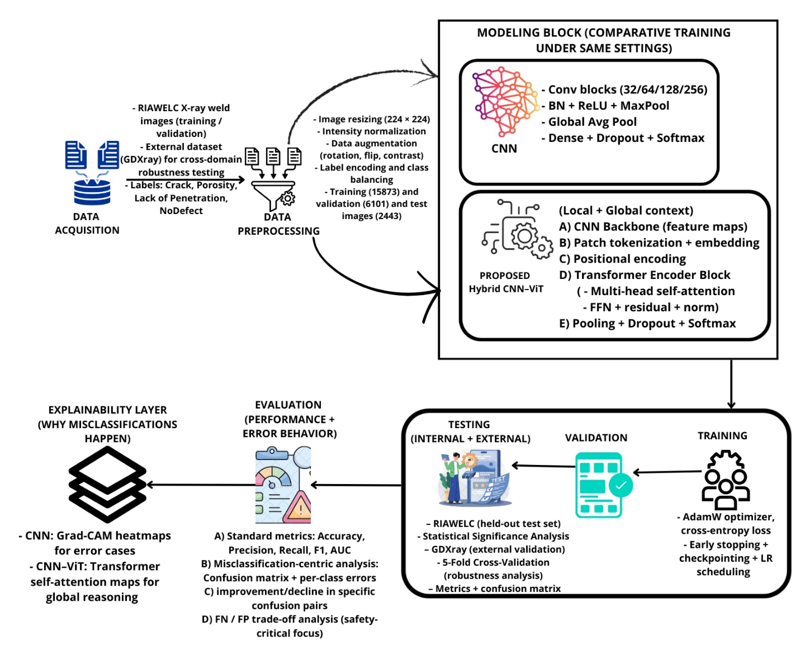
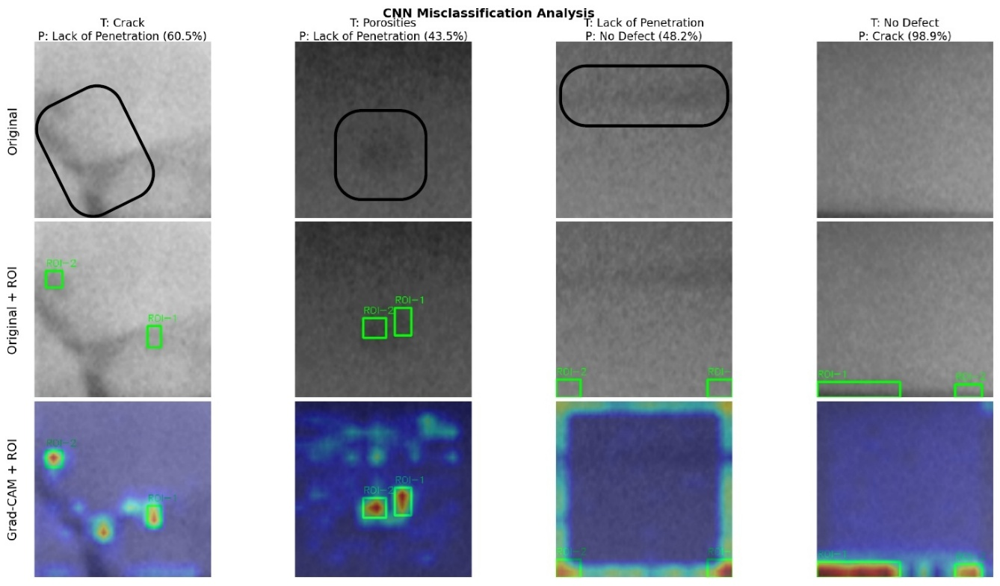
- Result. CNN-ViT 98.56% vs CNN baseline 97.90%; ~31% reduction in misclassification rate.
- Lesson. Hybrid CNN + ViT = local CNN features + global ViT context, with auditable Grad-CAM evidence per decision — a regulatory-grade design.
36. Case 15 — CNN as Crystal-Plasticity Surrogate
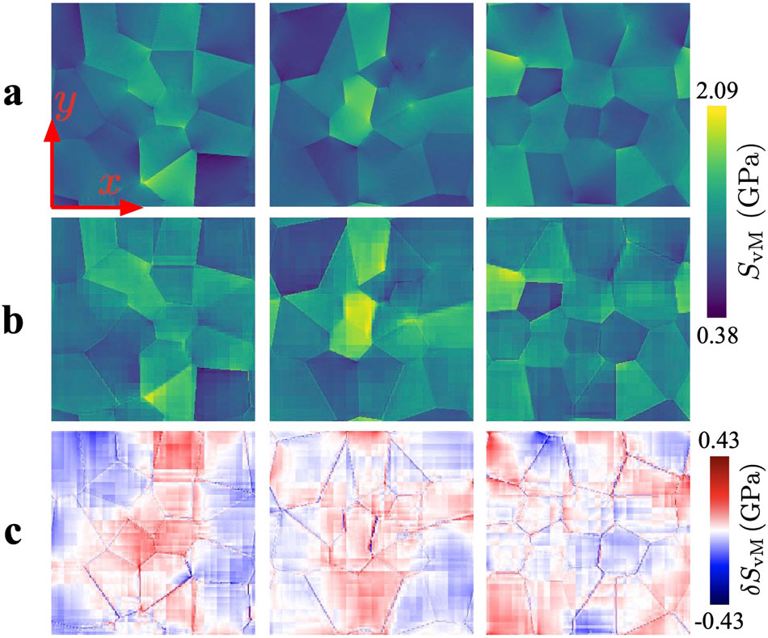
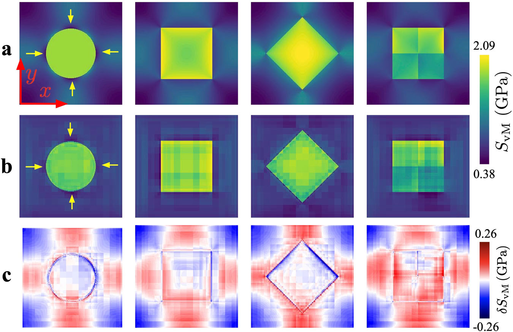
- Method. 3-D CNN trained on CPFEM ground truth; orders of magnitude faster at inference.
- Lesson. CNN now a viable surrogate inside design loops — replaces FE inner solves wherever speed matters more than the last fraction of a percent.
37. Case 16 — End-to-End PSP Closure
Two CNNs in series
- Each CNN trained independently, then chained at inference.
- Lesson. The PSPP backbone of the course is now fully learnable end-to-end Sandfeld, Stefan et al., (2024).
- Caveat. Errors compound across the chain — Unit 12 will revisit uncertainty propagation.
38. Processing Gallery Recap
Six cases, same toolkit
- Cameras (LPBF, FSW), thermographs, radiographs, RVEs.
- Same convolutional inductive bias as in characterization.
Common ceiling
- Performance is bounded by labels and SOPs, not architectures.
- The model is rarely the limiting factor in 2026.
§5 · The Pattern + Pitfalls
39. The Common Pattern
All sixteen cases fit:
Raw signal → Encoding → CNN
→ Loss → Label / property- The architecture family is shared.
- The encoding and deployment unit decide the project.
What still varies
- \(\mathbf{X}\) — pixels, voxels, spectra, sensor streams.
- \(y\) — class, mask, scalar, function.
- Loss — cross-entropy, IoU, MSE, calibrated probabilistic.
- Split — by specimen / build / day / instrument.
40. CNN vs 2-Point Statistics — When CNN Wins
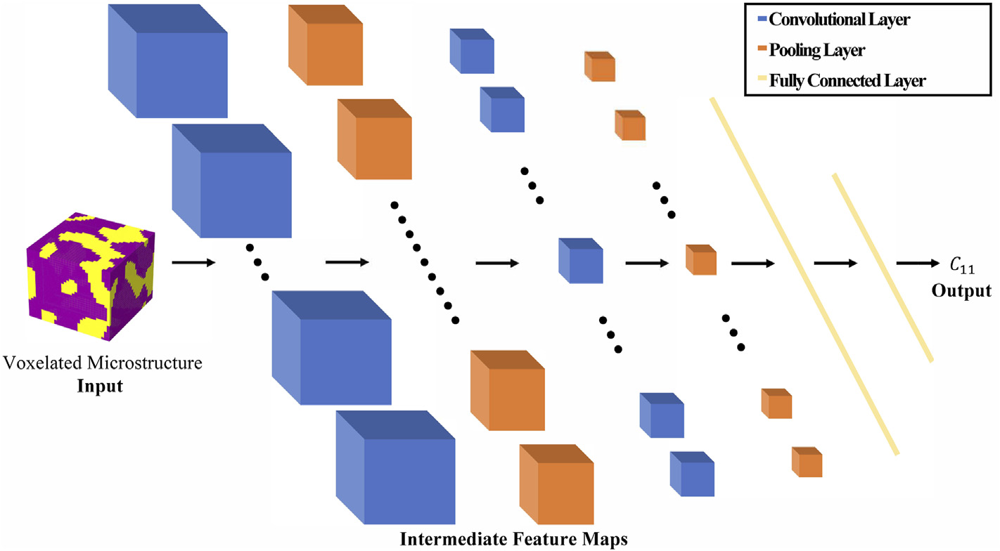
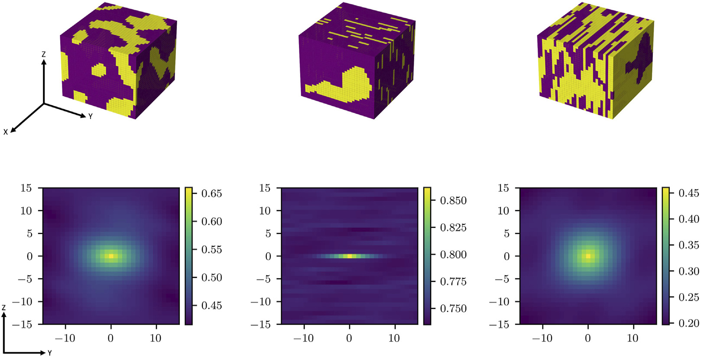
CNN wins when
- Spatial features are task-specific.
- \(N \gtrsim 10^3\) specimens or simulation augmentation available.
\(S_2\) / MKS still competitive when
- \(N\) small; simulation dominates.
- Hybrid (CNN ⊕ \(S_2\)): \(R^2 > 0.96\) on stiffness regression Mann, Andrew et al., (2022), doi:10.3389/fmats.2022.851085.
41. Specimen Splits Revisited
Invalid protocol
- 200 micrographs → 16 crops each → 3200 patches.
- Random 80/20 patch split.
- Report \(R^2 \approx 0.95\).
Reality
- Train and test share specimens → correlated rows; metric is optimistic.
- Specimen-level split on the same labels can collapse \(R^2\) to ~0.72 Sandfeld, Stefan et al., (2024).
Rule. Group ID = whatever is exchangeable at deployment.
42. Cross-Lab Distribution Shift
- Train on microscope A: \(R^2 \approx 0.88\).
- Test on microscope B (same alloy): \(R^2 \approx 0.45\).
- CNN may latch onto contrast / vignetting / detector noise rather than grains.
Mitigations (preview Unit 6)
- Physics-aware normalisation, harmonised imaging SOPs.
- Domain randomisation / adaptation when train and deployment labs differ.
- Saliency / attention checks that the network looks where physics says it should.
43. Class Imbalance on Rare Defects
- Defect prevalence 2% → “always predict good” → 98% accuracy, 0% recall.
- Materials goal is usually high recall on the rare class.
Mitigations
- Use precision / recall / F1 or PR-AUC, not accuracy.
- Stratified specimen-level splits.
- Cost-sensitive losses; resample within train only; active labelling of hard negatives.
44. Label Noise from Upstream Segmentation
- \(\mathbf{x}\) derived from segmentation v1.3; \(y\) from pristine tensile test.
- Segmentation drift between v1.3 and v1.4 → false aleatory scatter → CNN fits artefacts.
Mitigations
- Inter-annotator / inter-version study on a subset.
- Ensemble segmentations; report label variance.
- Uncertainty-aware losses (preview Unit 12).
- Version-pin the entire upstream pipeline.
45. Raw-Pixel MLP Failure → CNN Motivation
- \(1024 \times 1024\) RGB → first dense layer ≈ \(10^9\) weights.
- \(N \sim 10^2\) specimens: spurious pixel correlations dominate.
- Optimisation finds coupons, scratches, brightness gradients — not physics.
The Unit 5 punchline
- CNNs: locality + weight sharing → effective parameter count drops by orders of magnitude.
- The right inductive bias for spatial data Goodfellow, Ian et al., (2016).
46. When Not to Use a CNN
Use simpler models when
- \(N\) is small (a few hundred specimens).
- Inputs are tabular composition + process.
- Regulatory / safety context demands coefficient-level audit.
- Extrapolation outside training process window is required.
Practical rule
- Always fit a serious linear / MLP / tree baseline first.
- Escalate to CNN only when grouped-CV gain survives stress tests (shift, OOD batches) Sandfeld, Stefan et al., (2024).
Note
“Use the simplest model that survives grouped CV.”
§6 · Bridge & Wrap
47. The MFML Toolkit Applied Here
Forward pass / activations / training loop don’t change.
- Same \(f_\theta\), same \(J\), same backprop.
- What MFML proved: this toolkit is flexible.
What changes in materials ML
- What feeds \(\mathbf{X}\) — pixels, descriptors, \(S_2\), process vector, spectra.
- What \(y\) means — measurement chain, label noise, calibration.
- How you split — specimens, batches, instruments.
- What loss reflects deployment cost.
48. Looking Ahead — Unit 5 (CNNs)
Next week
- Convolution = locality + weight sharing.
- Architectures: VGG, ResNet, U-Net, ViT.
- Where each architecture fits a materials task.
Carry forward from today
- Specimen splits, normalisation, shift awareness.
- CNNs multiply debugging surface — they don’t remove obligations Goodfellow, Ian et al., (2016).
Beyond Unit 5
- Unit 6: transfer learning + domain shift.
- Unit 12: uncertainty quantification.
49. Reading + Exercises
Reading
- Sandfeld 2024 — Ch. 17 (NN), microstructure / 2-point statistics chapters Sandfeld, Stefan et al., (2024).
- McClarren 2021 — Ch. 5 (feed-forward nets) McClarren, Ryan G., (2021).
- Neuer 2024 — Ch. 4 (supervised workflow) Neuer, Michael et al., (2024).
- Goodfellow 2016 — Ch. 9 (CNN motivation, optional) Goodfellow, Ian et al., (2016).
- Holm 2020 — single-paper survey of the field Holm, Elizabeth A. et al., (2020), doi:10.1007/s11661-020-06008-4.
Exercises
- Reproduce Azimi-style classification on UHCS micrographs (NIST public). Compare a hand-crafted feature pipeline against a small CNN.
- Compute binned \(S_2\) on a binary microstructure set; train an MLP on \(S_2\) and a small CNN on raw images; compare grouped-CV scores.
- Repeat (2) with deliberate patch-level splitting; quantify how much \(R^2\) inflates vs the specimen-level baseline.
50. Key Takeaways
- Hand-crafted metrics — interpretable, standardised, lossy by construction.
- \(S_2\) / MKS / eigen-modes — principled middle ground between scalars and pixels.
- Sixteen real applications across SEM, EBSD, TEM, XRD, X-ray CT, AM cameras, weld radiographs, RVE simulators — same convolutional toolkit, different encodings and heads.
- Representation > metric when data and SOPs allow Sandfeld, Stefan et al., (2024).
- CNNs are the right inductive bias for spatial / spectral signals — Unit 5 next Goodfellow, Ian et al., (2016).
- Specimen splits, lab shift, imbalance, segmentation noise — still your responsibility, no matter how deep the network.
Continue
References
Materials data science, Stefan Sandfeld & others
Advanced steel microstructural classification by deep learning methods, Scientific Reports, Seyed Majid Azimi, Dominik Britz, Michael Engstler, Mario Fritz, & Frank Mücklich https://doi.org/10.1038/s41598-018-20037-5
Overview: Computer vision and machine learning for microstructural characterization and analysis, Metallurgical and Materials Transactions A, Elizabeth A. Holm, Ryan Cohn, Nan Gao, Andrew R. Kitahara, Thomas P. Matson, Bo Lei, & Srujana Rao Yarasi https://doi.org/10.1007/s11661-020-06008-4
Machine learning for engineers: Introduction to physics-informed, explainable learning methods for AI in engineering applications, Michael Neuer & others
Machine learning for engineers: Using data to solve problems for physical systems, Ryan G. McClarren
Exploring the microstructure manifold: Image texture representations applied to ultrahigh carbon steel microstructures, Acta Materialia, Brian L. DeCost, Toby Francis, & Elizabeth A. Holm https://doi.org/10.1016/j.actamat.2017.05.014
High throughput quantitative metallography for complex microstructures using deep learning: A case study in ultrahigh carbon steel, Microscopy and Microanalysis, Brian L. DeCost, Bo Lei, Toby Francis, & Elizabeth A. Holm https://doi.org/10.1017/S1431927618015635
Deep learning for automated phase segmentation in EBSD maps. A case study in dual phase steel microstructures, Materials Characterization, T. Martinez Ostormujof, R. R. P. Purushottam Raj Purohit, S. Breumier, N. Gey, M. Salib, & L. Germain https://doi.org/10.1016/j.matchar.2021.111638
A deep learning approach for complex microstructure inference, Nature Communications, Ali Riza Durmaz, Martin Müller, Bo Lei, Akhil Thomas, Dominik Britz, Elizabeth A. Holm, Chris Eberl, Frank Mücklich, & Peter Gumbsch https://doi.org/10.1038/s41467-021-26565-5
Deep learning of crystalline defects from TEM images: A solution for the problem of “never enough training data”, Machine Learning: Science and Technology, Kishan Govind, Daniela Oliveros, Antonin Dlouhy, Marc Legros, & Stefan Sandfeld https://doi.org/10.1088/2632-2153/ad1a4e
Deep learning for semantic segmentation of defects in advanced STEM images of steels, Scientific Reports, Graham Roberts, Simon Y. Haile, Rajat Sainju, Danny J. Edwards, Brian Hutchinson, & Yuanyuan Zhu https://doi.org/10.1038/s41598-019-49105-0
Deep learning approaches for mining structure-property linkages in high contrast composites from simulation datasets, Computational Materials Science, Zijiang Yang, Yuksel C. Yabansu, Reda Al-Bahrani, Wei-keng Liao, Alok N. Choudhary, Surya R. Kalidindi, & Ankit Agrawal https://doi.org/10.1016/j.commatsci.2018.05.014
Modeling structure-property relationships with convolutional neural networks: Yield surface prediction based on microstructure images, International Journal of Plasticity, Julian N. Heidenreich, Maysam B. Gorji, & Dirk Mohr https://doi.org/10.1016/j.ijplas.2022.103506
A deep-learning technique for phase identification in multiphase inorganic compounds using synthetic XRD powder patterns, Nature Communications, Jin-Woong Lee, Woon Bae Park, Jin Hee Lee, Satendra Pal Singh, & Kee-Sun Sohn https://doi.org/10.1038/s41467-019-13749-3
Deep learning-based segmentation of lithium-ion battery microstructures enhanced by artificially generated electrodes, Nature Communications, Simon Müller, Christina Sauter, Ramesh Shunmugasundaram, Nils Wenzler, Vincent De Andrade, Francesco De Carlo, Ender Konukoglu, & Vanessa Wood https://doi.org/10.1038/s41467-021-26480-9
Monitoring of the powder bed quality in metal additive manufacturing using deep transfer learning, Materials & Design, Felix Gabriel Fischer, Max Gero Zimmermann, Niklas Praetzsch, & Christian Knaak https://doi.org/10.1016/j.matdes.2022.111029
A deep learning framework for defect prediction based on thermographic in-situ monitoring in laser powder bed fusion, Journal of Intelligent Manufacturing, Simon Oster, Philipp P. Breese, Alexander Ulbricht, Gunther Mohr, & Simon J. Altenburg https://doi.org/10.1007/s10845-023-02117-0
Machine vision defect segmentation and geometric measurement for real time quality monitoring in friction stir welding, Journal of Manufacturing Systems, Naveen Loganathan, Joel Andersson, & Vivek Patel https://doi.org/10.1016/j.jmsy.2026.01.007
A misclassification-aware explainable hybrid CNN-vision transformer framework for radiographic weld inspection, Scientific Reports, Kumar Parmar, Rituraj Jain, P. T. Anitha, A. Jayanthi, Ramesh Babu Putchanuthala, Kamal Upreti, & Terefe Bayisa Ayele https://doi.org/10.1038/s41598-026-44874-x
Teaching solid mechanics to artificial intelligence—a fast solver for heterogeneous materials, npj Computational Materials, Jaber Rezaei Mianroodi, Nima H. Siboni, & Dierk Raabe https://doi.org/10.1038/s41524-021-00571-z
Development of a robust CNN model for capturing microstructure-property linkages and building property closures supporting material design, Frontiers in Materials, Andrew Mann & Surya R. Kalidindi https://doi.org/10.3389/fmats.2022.851085
Deep learning, Ian Goodfellow, Yoshua Bengio, & Aaron Courville

© Philipp Pelz - Machine Learning in Materials Processing & Characterization